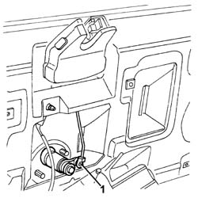
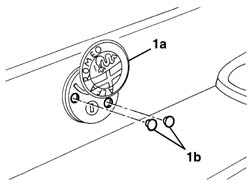
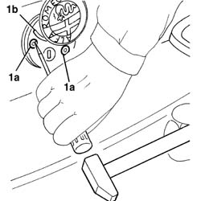
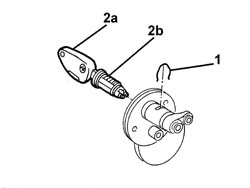

7055A82 rear ornament - r r
- Path
- Procedures > 70 FITTINGS > 7055 MOULDING AND PROTECTION > 7055A exterior mouldings > 7055A82 rear ornament - r r
- Kind
- repair procedure (removal / refitting; the operation number is the code)
- Applies to
- all engines; all production periods
- Interactive page
- https://sloeber94.github.io/elrnDB-a156/en/#/3238955
Applies to: all engines; all production periods; only with equipment: Station Wagon
 Removing
Removing
 Refitting
Refitting7040G36 BULB HOLDER FOR LOAD CARRYING COMPARTMENT lighting on tailgate - R.R.
7015A05 tail-gate lower interior panel-r r
1. Disconnect the linkage from the lock barrel.

Applies to: all engines; all production periods; only with equipment: Station Wagon
1. Turn crest (1a) and prise out both plugs (1b) protecting the retaining bolts.

Applies to: all engines; all production periods; only with equipment: Station Wagon
1. Using a punch, undo the two self-tapping screws (1a) of the crest mounting (1b) and remove the crest.

Applies to: all engines; all production periods; only with equipment: Station Wagon
1. Lif the retaining clip as much as necessary to disconnect it from the lock barrel.
2. Insert the key (2a) in the lock barrel (2b) and withdraw it.

Applies to: all engines; all production periods; only with equipment: Station Wagon
Refitting
RemovingCheck that the lock barrel and the crest are not damaged.
Fit the retaining spring into its seat.
Insert the key in the barrel; fit the barrel in its seating until the groove engages with the retaining clip.
Fit the crest assembly with lock barrel and secure using two new self-tapping screws.
Connect the link to the lock barrel.
Check that the lock barrel and the lock control mechanism are working properly.
7015A05 tail-gate lower interior panel-r r
7040G36 BULB HOLDER FOR LOAD CARRYING COMPARTMENT lighting on tailgate - R.R.